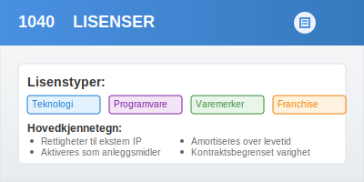
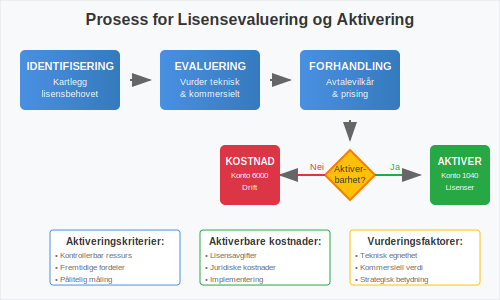
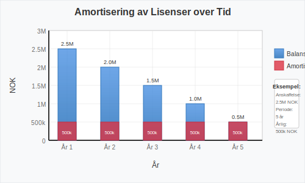
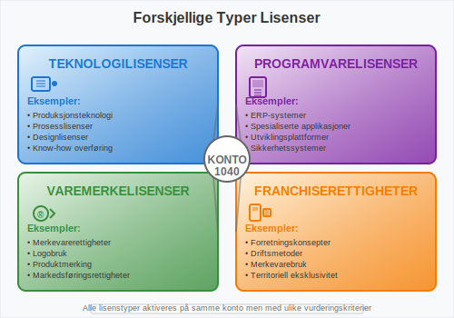

Konto 1040 - Lisenser er en viktig konto i norsk kontoplan som benyttes for å registrere immaterielle eiendeler knyttet til lisensrettigheter. Denne kontoen brukes når virksomheter erverver eller utvikler lisenser som kan aktiveres i balansen og amortiseres over lisensens levetid.

Hva er lisenser?
En lisens er en juridisk tillatelse som gir rettigheter til å bruke, produsere eller distribuere intellektuell eiendom som eies av en annen part. Lisenser kan omfatte:
- Teknologilisenser for bruk av tekniske løsninger
- Programvarelisenser for bruk av datasystemer
- Varemerkelisenser for bruk av kommersielle merker
- Patentlisenser for bruk av patentbeskyttede oppfinnelser
- Franchiserettigheter for bruk av forretningskonsepter
- Medielisenser for bruk av innhold og kunstverk
Lisenstypene i norsk næringsliv
| Lisenstype | Typisk varighet | Fornyelsesmulighet |
|---|---|---|
| Teknologilisenser | 5-15 år | Ofte fornybar |
| Programvarelisenser | 1-5 år | Årlig fornyelse |
| Varemerkelisenser | 3-10 år | Vanligvis fornybar |
| Patentlisenser | Inntil 20 år | Begrenset av patent |
| Franchiserettigheter | 5-20 år | Ofte fornybar |
| Medielisenser | 1-10 år | Varierer sterkt |
Kriterier for aktivering av lisenser
For at lisenser kan aktiveres på konto 1040, må de oppfylle spesifikke kriterier:
1. Kontrollerbar ressurs
Virksomheten må ha juridisk kontroll over lisensrettigheten gjennom:
- Skriftlig lisensavtale med klare rettigheter
- Eksklusive eller begrenset konkurranse
- Juridisk håndhevbare rettigheter
- Overførbar eller fornybar lisens
2. Fremtidige økonomiske fordeler
Lisensen må kunne generere påviselige økonomiske fordeler gjennom:
- Direkte inntektsgenerering
- Kostnadbreduksjoner i drift
- Markedsadgang eller konkurransefordeler
- Strategisk verdi for virksomheten
3. Pålitelig kostnadsmåling
Anskaffelseskostnaden må kunne måles pålitelig og inkludere:
- Lisensavgifter og etableringsgebyrer
- Juridiske kostnader ved forhandling
- Konsulenthonorar og due diligence
- Implementerings- og opplæringskostnader
- Registreringsavgifter

Hva kan aktiveres på konto 1040?
Aktiverbare kostnader
- Lisensavgifter (opprinnelige og fornyelsesgebyrer)
- Juridiske kostnader ved forhandling og gjennomgang
- Konsulenthonorar for teknisk evaluering
- Implementeringskostnader direkte knyttet til lisensen
- Opplæringskostnader for å utnytte lisensen
- Registreringsavgifter og administrative kostnader
- Modifikasjonskostnader for tilpasning til virksomheten
Ikke-aktiverbare kostnader
- Generelle administrative kostnader
- Forskning for å finne passende lisenser
- Markedsføringskostnader for lisensierte produkter
- Vedlikeholdskostnader for ordinær drift
- Interne personalkostnader for evaluering
- Kostnader ved avslåtte lisensforhandlinger
Amortisering av lisenser
Lisenser på konto 1040 skal amortiseres over lisensens økonomiske levetid eller kontraktens løpetid, avhengig av hva som er kortest.
Amortiseringsperioder
| Lisenstype | Kontraktslengde | Typisk økonomisk levetid |
|---|---|---|
| Teknologilisenser | 5-15 år | 3-10 år |
| Programvarelisenser | 1-5 år | 1-3 år |
| Varemerkelisenser | 3-10 år | 5-15 år |
| Franchiserettigheter | 5-20 år | 10-20 år |
| Medielisenser | 1-10 år | 2-8 år |
Amortiseringsmetoder
Lineær amortisering er standard for lisenser:
Årlig amortisering = Anskaffelseskost / Amortiseringsperiode
Akselerert amortisering kan benyttes dersom:
- Teknologisk utvikling påvirker lisensens verdi
- Markedsendringer reduserer nytten
- Konkurranse eroderer lisensens fordeler
Eksempel: Programvarelisens anskaffet for 1 500 000 NOK med 5 års kontraktslengde:
- Årlig amortisering = 1 500 000 / 5 = 300 000 NOK

Regnskapsføring av lisenser
Anskaffelse av lisens
Debet: Konto 1040 - Lisenser
Kredit: Konto 1900 - Bank/Kasse
Årlig amortisering
Debet: Konto 6000 - Amortisering immat. eiendeler
Kredit: Konto 1049 - Akkumulert amortisering lisenser
Fornyelse av lisens
Debet: Konto 1040 - Lisenser (hvis øker verdien)
Debet: Konto 6000 - Driftskostnader (hvis kun vedlikehold)
Kredit: Konto 1900 - Bank/Kasse
Avslutning av lisens
Debet: Konto 1049 - Akkumulert amortisering lisenser
Debet: Konto 6900 - Tap ved avslutning av anleggsmidler
Kredit: Konto 1040 - Lisenser
Verditest og nedskrivning
Lisenser på konto 1040 må regelmessig vurderes for nedskrivning dersom det foreligger indikasjoner på verdifall:
Indikatorer på verdifall
- Teknologiske endringer som gjør lisensen irrelevant
- Markedsendringer som reduserer lisensens verdi
- Konkurrerende løsninger som eliminerer fordeler
- Regulatoriske endringer som begrenser bruk
- Lisensgiverens problemer som påvirker støtte
- Kontraktbrudd eller juridiske tvister
Nedskrivningstest
- Identifisering av indikasjoner på verdifall
- Beregning av gjenvinnbart beløp
- Sammenligning med balanseført verdi
- Regnskapsføring av nedskrivning
Debet: Konto 6900 - Nedskrivning av anleggsmidler
Kredit: Konto 1040 - Lisenser
Forskjellige typer lisenser
Teknologilisenser
Teknologilisenser gir rett til å bruke tekniske løsninger, prosesser eller know-how:
- Produksjonsteknologi for spesialiserte prosesser
- Designlisenser for produktutforming
- Prosesslisenser for effektivisering
- Kvalitetsstandarder og sertifiseringer
Programvarelisenser
Programvarelisenser omfatter rettigheter til datasystemer og applikasjoner:
- ERP-systemer for virksomhetsstyring
- Spesialiserte applikasjoner for bransjen
- Utviklingsverktøy og plattformer
- Sikkerhetssystemer og antivirus
Varemerke- og franchiserettigheter
Kommersielle lisenser for merkevarer og forretningskonsepter:
- Varemerkelisenser for produktmerking
- Franchiserettigheter for forretningsdrift
- Distribusjonslisenser for salg av produkter
- Markedsføringsrettigheter for kampanjer

Internasjonale lisenser
For virksomheter med internasjonale lisenser gjelder spesielle hensyn:
Valutarisiko
- Omregning til NOK ved aktivering
- Revaluering ved vesentlige kursendringer
- Sikring av valutarisiko ved behov
Jurisdiksjonsrisiko
- Ulike lovverk i forskjellige land
- Håndhevelse av lisensrettigheter
- Skatteregler for lisensbetalinger
Transferprising
- Internprising ved konserninternt salg
- Dokumentasjon av markedsmessige vilkår
- Skattemessige konsekvenser
Skattemessige forhold
Skattemessig behandling av lisenser kan avvike fra regnskapsmessig behandling:
Aktivering og avskrivning
- Skattemessig: Minimum 5 års avskrivning
- Regnskapsmessig: Økonomisk levetid
- Forskjell: Kan gi midlertidige forskjeller
Fradragsrett
- Lisensavgifter er som regel fradragsberettigede
- Fornyelsesgebyrer kan kostnadsføres direkte
- Utviklingskostnader kan ha spesielle regler
Kildeskatt
- Internasjonale lisenser kan være gjenstand for kildeskatt
- Skatteavtaler kan redusere skattesatser
- Dokumentasjon av eierskap og betalinger
Eksempler på bruk av konto 1040
Eksempel 1: Teknologilisens
TechPro AS erverver lisens for avansert produksjonsteknologi:
Kostnader:
- Lisensavgift: 2 500 000 NOK
- Implementering: 500 000 NOK
- Opplæring: 200 000 NOK
- Totalt: 3 200 000 NOK
Regnskapsføring:
- Aktivering: 3 200 000 NOK på konto 1040
- Amortisering: 8 år (400 000 NOK årlig)
- Forventet avkastning: 600 000 NOK årlig i kostnadsbesparelser
Eksempel 2: Programvarelisens
ServiceCorp AS implementerer nytt ERP-system:
Kostnader:
- Lisensiering: 1 000 000 NOK
- Tilpasning: 300 000 NOK
- Opplæring: 150 000 NOK
- Totalt: 1 450 000 NOK
Regnskapsføring:
- Aktivering: 1 450 000 NOK på konto 1040
- Amortisering: 5 år (290 000 NOK årlig)
- Forventet effekt: 20% reduksjon i administrative kostnader
Eksempel 3: Franchiserettigheter
FranchiseCo AS erverver franchiserettigheter:
Kostnader:
- Etableringsavgift: 800 000 NOK
- Juridiske kostnader: 100 000 NOK
- Opplæring: 50 000 NOK
- Totalt: 950 000 NOK
Regnskapsføring:
- Aktivering: 950 000 NOK på konto 1040
- Amortisering: 10 år (95 000 NOK årlig)
- Løpende royalty: 5% av omsetning (kostnadsføres direkte på Konto 7600 - Lisensavgifter og royalties)
Rapportering i årsregnskapet
Lisenser på konto 1040 rapporteres som anleggsmidler i balansen. I notene må det opplyses om:
Påkrevde opplysninger
- Anskaffelseskost ved årets begynnelse
- Tilgang i løpet av året
- Amortisering for året
- Nedskrivninger hvis aktuelt
- Balanseført verdi ved årets slutt
- Amortiseringsmetode og restlevetid
Spesielle opplysninger for lisenser
- Lisenstype og hovedinnhold
- Kontraktslengde og fornyelsesvilkår
- Geografisk omfang og begrensninger
- Avhengighet av lisensgivere
- Risikofaktorer og usikkerhet
Risikostyring for lisenser
Kontraktsrisiko
- Fornyelsesvilkår og terminering
- Prisøkninger og justeringsmekanismer
- Prestasjonsgarantier og servicenivå
- Intellektuell eiendom og erstatningsansvar
Leverandørrisiko
- Lisensgiverens finansielle stabilitet
- Produktutvikling og innovasjon
- Konkurranseposisjon i markedet
- Strategiske endringer hos leverandør
Teknologirisiko
- Teknologisk utvikling og obsolescence
- Kompatibilitet med eksisterende systemer
- Sikkerhet og databeskyttelse
- Ytelse og skalerbarhet
Forskjell fra andre immaterielle eiendeler
| Konto | Beskrivelse | Hovedforskjell |
|---|---|---|
| 1000 | Forskning og utvikling | Intern utvikling av IP |
| 1020 | Konsesjoner | Offentlige tillatelser |
| 1030 | Patenter | Beskyttede tekniske oppfinnelser |
| 1040 | Lisenser | Rettigheter til ekstern IP |
| 1050 | Varemerker | Kommersielle identifikatorer |
| 1060 | Andre rettigheter | Øvrige immaterielle rettigheter |
Praktiske tips for virksomheter
Lisensstrategi
- Identifiser kritiske lisenser for virksomheten
- Vurder kjøp vs. leasing av lisenser
- Planlegg fornyelser og oppgraderinger
- Diversifiser leverandørrisiko
Kontraktsforhandling
- Forhandl gunstige fornyelsesvilkår
- Sikr fleksibilitet ved endringer
- Klargjør rettigheter og plikter
- Inkluder exit-klausuler
Administrasjon og kontroll
- Etabler lisensportefølje-oversikt
- Overvåk bruken av lisenser
- Sikr compliance med avtaler
- Planlegg budsjett for fornyelser
Økonomisk styring
- Vurder regelmessig lisensers verdi
- Analyser avkastning på lisensinvesteringer
- Sammenlign med alternative løsninger
- Optimaliser lisensporteføljen